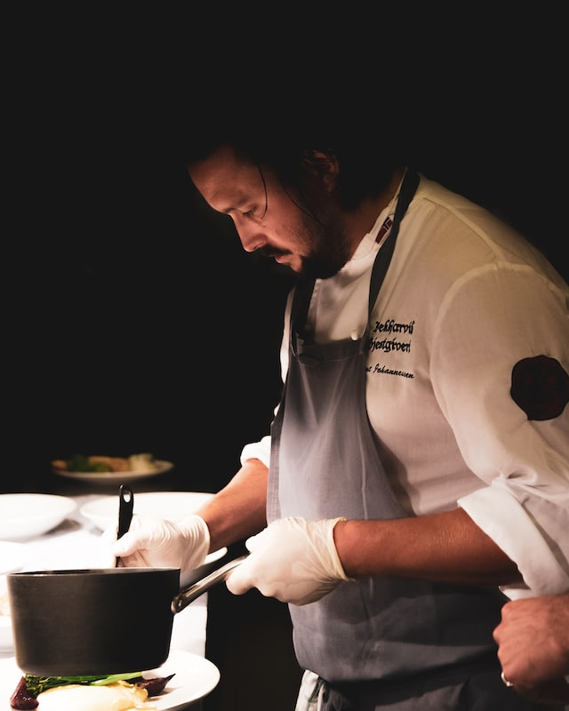
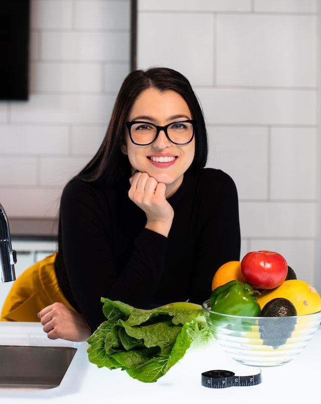

Our Audience:
Welcome to the town of Rixida, where the finest chefs have created a community together. Rent is free to the voted best chef in town, so there are many competitions held monthly to determine the winner. Our main audience is comprised of male chefs between the ages of 18-35, but we do have some women in that age range and we even had our first woman best chef ever. We only have single people who regularly come to events, but we would love to increase that number soon and even expand beyond chefs eventually. Thank you for choosing Rixida, and enjoy your first meal on us!
Personas:
Joe Exotic:
This particular specimen is age 35 and has lived in Rixida for 4 years. He had been crowned the best cook once or twice, but he mainly came here for community involvement. He feels as though Rixida hasn't had any networking events like they have advertised and wants to be able to improve his skills through classes.
Carol Baskins:
Fresh out of college and excited to pursue her career, this female chef is age 26. She really just wants to get to know people, but she also wants to learn other skills besides cooking. She misses her college which provided several hobby clubs and organizations for women to meet as well. She hopes that during her time here she will develop her skills but also build a network for her future profession and learn some new skills.